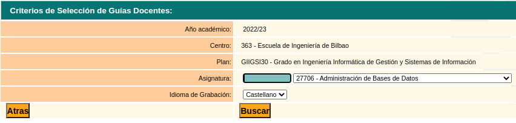

Seguridad en Sistemas Web
Mikel Egaña Aranguren
mikel-egana-aranguren.github.io

Mikel Egaña Aranguren
Mikel Egaña Aranguren
mikel-egana-aranguren.github.io
https://doi.org/10.5281/zenodo.4302267
https://github.com/mikel-egana-aranguren/EHU-SGSSI-01


El control de acceso obliga al usuario a actuar solo dentro de los límites establecidos por los permisos definidos
Fallar en el control de acceso resulta en consecuencias graves
Violación del principio de "denegación por defecto": el acceso solo debería ser garantizado a ciertas capacidades, roles, o usuarios, pero está al alcance de cualquiera

Burlar el control de acceso mediante parametros URL o las peticiones APIs
Acceder a una cuenta personal e incluso modificar los datos con el identificador del usuario
Acceso API sin control para los metodos HTTP POST, PUT, y DELETE
Elevación de privilegio: acutar como administrador estando logeado como usuario
Replaying o modificación de JSON Web Token (JWT) para elevar privilegios
Mala configuración de CORS permite acceso API desde origenes no autorizados
Denegación por defecto para todos los recursos, excepto públicos
Implementar mecanismos de acceso de control una sola vez y extenderlos a toda la aplicación, minimizando el uso de CORS
No permitir listado de directorios y asegurarse de que no hay archivos de metadatos (ej. git) ni de backups en el nivel root de la aplicación
Logear todos los intentos de entrada, alertar a los administradores cuando sea necesario (ej. muchos accesos fallidos)
Limitar la tasa de peticiones de API para evitar ataques mediante programas
Identificadores de sesión:
Llamada a SQL para obtener información de cuenta, con datos sin verificar:
pstmt.setString(1, request.getParameter("acct"));
ResultSet results = pstmt.executeQuery( );
El atacante solo tiene que usar la URL https://example.com/app/accountInfo?acct=notmyacct
Fallos en los métodos criptográficos usados que resultan en exposición de datos
Determinar las necesidades de protección de los datos tanto en transmisión como en almacenamiento (At rest): leyes de protecciones de datos
¿Los datos se transmiten como texto plano? Tanto en conexiones externas como internas (ej. servidores de balance de carga): HTTP, SMTP, FTP ...
¿Se usan algoritmos o protocolos obsoletos o débiles?
¿Se usan claves débiles o claves por defecto?
¿Se aplica una gestión de claves adecuada?
Evitar algoritmos débiles
Usar Key Generators o Random Number Generators de alta entropía
Usar conexiones seguras como SSL/TLS para evitar ataques Mand in the middle
Asegurar que solo las personas autorizadas usan la clave
Idealmente usar hardware dedicado: Hardware Security Module:
También se pueden usar servicios en la nube: Google Cloud Key Management
Cuando una clave agota su periodo de validez, se retira, descifrando y volviendo a cifrar los datos con una clave nueva
Cuanto más tiempo esté una clave en circulación, más probable que sea comprometida
Si una clave ha sido comprometida, hay que revocarla, aunque este dentro de su periodo de validez
Hay estándares que exigen guardar la clave revocada, por si hiciera falta en el futuro para descifrar datos (ej. en un juicio)
La destrucción completa de la clave implica no poder usarla en el futuro
No escribir valores de la clave en el código de software , aunque sea seguro
Principio del menor priviliegio: un usuario debería tener acceso sólo a las claves que realmente necesita
Usar HSMs
Automatizar la gestión de claves lo más posible
Dividir la generación, distribución etc entre diferentes personas
Dividir las claves en fragmentos
¿El certificado del servidor es válido y de confianza, garantizado por un AC?
¿Se usan las contraseñas de los usuarios directamente como claves, en vez de usar password-based key derivation functions (PBKDFs)?
¿Es la semilla de aleatoriedad usada lo suficientemente fuerte?
Clasificar los datos transmitidos, procesados y almacenados según su nivel de exigencia de privacidad
Almacenar la menor cantidad de datos sensibles posible, incluso usando métodos como Tokenización
Cifrar todos los datos almacenados (Encription at rest)
Usar algoritmos actualizados (POr ejmplo no usar MD5, SHA1), claves fuertes, y gestión de claves
Cifrar todos los datos en transito con protocolos como TLS FS (TLS + Forwards Secrecy)
No permitir el uso de caches en el cliente para datos sensibles
Almacenar contraseñas con hashes + sal
Usar semillas con la mayor entropia posible
Una aplicación usa la función por defecto de la base de datos para encriptar datos. Sin embargo estos datos se desencriptan automáticamente al consultarlos, permitiendo el acceso si por ejemplo hay un ataque de Inyección SQL
Una web no obliga al uso de TLS. Si un atacante monitoriza el tráfico y "baja" una conexión de HTTPS a HTTP puede interceptar consultas y conseguir la cookie de sesión del usuario. El atacante reenvia la cookie (replay) secuestrando la sesión del usuario y obteniendo acceso a los datos de usuario
La base de datos usa hashes sin sal. Un atacante puede pre-calcular los hashes con GPUs

txtUserId = getRequestString("UserId");
txtSQL = "SELECT * FROM Users WHERE UserId = " + txtUserId;
105 OR 1=1
SELECT * FROM Users WHERE UserId = 105 OR 1=1;
$stmt = $dbh->prepare("INSERT INTO Customers (CustomerName,Address,City) VALUES (:nam, :add, :cit)");
$stmt->bindParam(':nam', $txtNam);
$stmt->bindParam(':add', $txtAdd);
$stmt->bindParam(':cit', $txtCit);
$stmt->execute();
Revisión del código fuente
Testeo automatizado de inputs en forma de parametros, cabeceras HTTP, URLs, cookies, JSON, y XML
Application Security Testing en pipelines de Integración Continua/Despliegue Continuo
Usar APIs seguras que no usen el intérprete. Si no es posible, usar llamadas parametrizadas u ORM
Validar los inputs
"Escapar" todos los caracteres especiales posibles
Usar controles como LIMIT en SQL para evitar perdida masiva de datos